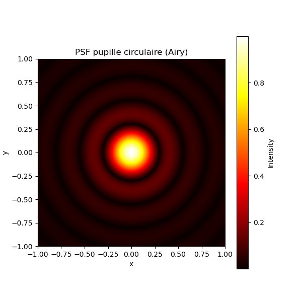

Spectral filtering by a microscope objective
Although optical microscopy allow the observation of microscopic scale objects, microscopists have faced for centuries a fondamental physical barrier set by the wave-like nature of light. Indeed, the phenomenon of diffraction is to blame for for this limitation. Because the amount of light collected by the microscope objective is limited by its entrance pupil. To caracterize the amount of light collected by an objective, the quantity which has been introduced is the numerical aperture defined by (\ NA=n\sin \theta \) where (\n\) is the refraction index surrounding the objective and (\theta)\ is the objective aperture angle.

This section will contain details about the numerical simulations performed for spectral filtering. The image above illustrates a key component or a result of these simulations.
Test
\[ \vec{E}=\mathbf{i} \]